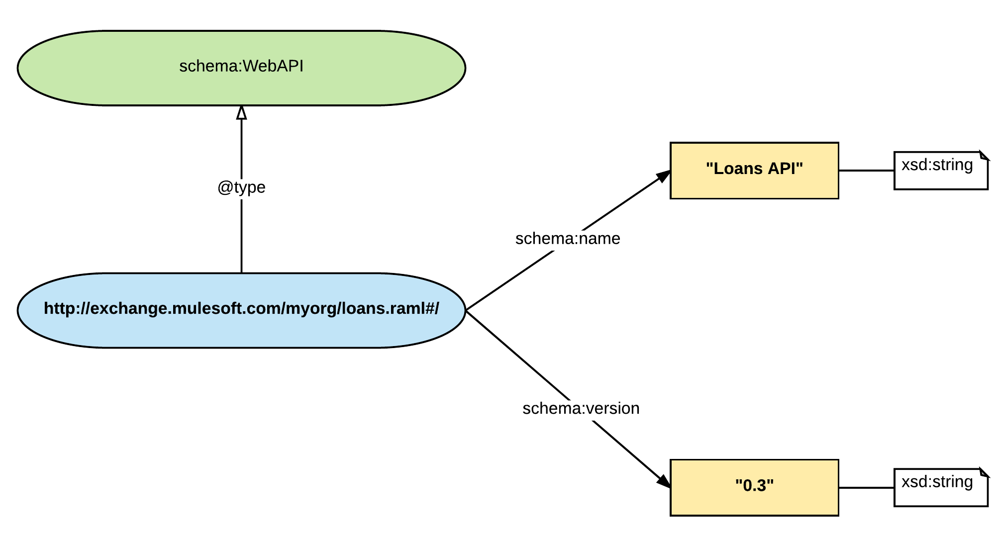
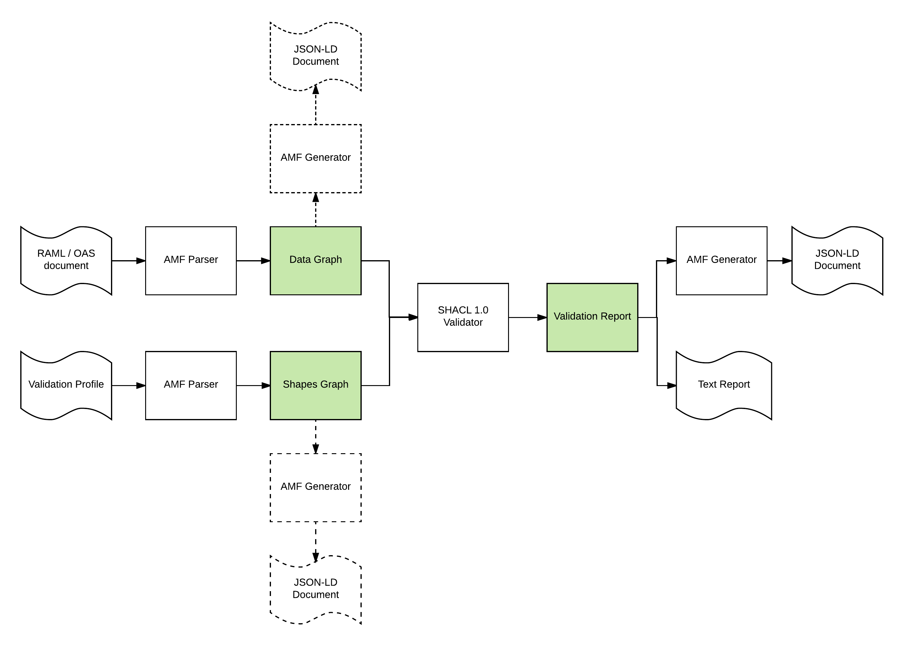
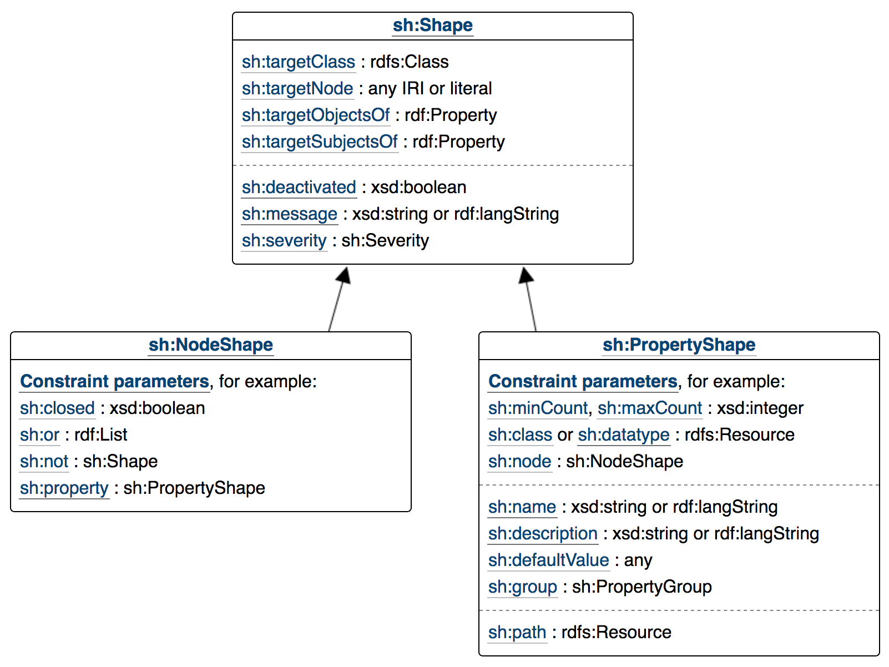

AML validation model
Validation approach
AMF includes a powerful validation framework that can be used to define constraints and validate them over parsed models for HTTP APIs or any other type of RAML document.
AMF validation has the following design goals:
- Validation is explicit
Constraints over the parsed model are explicit. We want to avoid ambiguity about what is valid and invalid for a particular model. All the constraints defined have explicit identifiers and clients can access the full list of validations and their definitions.
- The validation mechanism is formal
AMF uses a W3C recommendation SHACL, to implement validation. SHACL provide powerful and clearly defined closed world semantics to validate information models, beyond what can be achieved through more limited validation schema languages like JSON-Schema. Thanks to SHACL sound logical foundation, we can explain easily why a model is invalid.
- Validations can be customised
AMF introduces the notion of a validation profile. Profiles group validations into sets of related constraints following certain semantics or standard requirements. RAML 1.0,RAML 0.8, OAS 2.0 are valid profiles that will ensure compatibility between the parsed model and these specifications. Furthermore, clients can create a custom validation profile, selecting the validations that are important for their use case, setting the right severity level for each validation or modifying one of the standard profiles, turning on and off individual validations in that profile.
- Validations can be extended
AMF validation profiles can be extended with custom validations defined by clients. A declarative approach using AMF validation profile dialect can be used to define new validations or a programmatic mechanism based on JavaScript functions can be followed. Advanced users can always define standard SHACL constraints to have complete control over the validation mechanism.
- Validations are data
AMF can parse the validation profile for an API and generate a model in the same way it parses the API definition itself. API model and validation profile model can be linked, stored, and queried as a single unified data graph.
Validation using data shapes
The main notion in AMF validation is that of a data shape.
The output of the AMF parser is a data graph where the nodes in the graph and their relationships capture the information of the input RAML or OAS document.
Data shapes impose restrictions about the valid properties and relationships for the nodes in the parsed data graph, grouped by node type.
For example, the following extract from a RAML document located at http://exchange.mulesoft.com/myorg/loans.raml:
title: Loans API
version: 0.3
Will produce the following data graph:

As we can see in the image, the 'title' RAML property has been parsed and mapped to the schema-org 'name' property in the parsed model and the 'version' property has been mapped to the schema-org 'version' property. At the same time, the main API document located at the root of the document #/ has been marked as being an instance of schema-org WebAPI class.
In order to consider the model encoded in this graph as valid, we might want to impose some restrictions for the nodes in the graph of type schema:WebAPI, for example, if certain properties are mandatory or optional, the range of the data type for the properties, etc.
In order to do this, we can define a 'data shape' constraining all instances of the schema:WebAPI type. For example, we can make the version mandatory and impose a pattern for the version string. This can be achieved using AMF validation profile syntax in the following way:
validations:
version-constraints:
message: Version is mandatory and must be a semantic version M.m.r?
targetClass: schema.WebAPI
propertyConstraints:
schema.version:
minCount: 1
pattern: "\d+\.\d+(\.\d+)?"
This snippet of text declares a new data shape (identified by 'version-constraints') for all instances of the schema:WebAPI class where for the schema.version property the minimum count of the property must be 1 (making it mandatory) and the value of the property must match the provided regular expression.
AMF validation will parse this data shape definition and validate that the model complies with all the data shapes defined. If some constraints are not met, a validation report including the node in the graph that violates the constraint, the identifier of the violated constraint and property, a descriptive message and information about the location in the input document of the model information violating the constraint will be generated.
Validation Profiles
In order to use data shapes in any realistic way, a number of data shapes must be defined and re-used together many times to provide a consistency in different RAML documents. We call these sets of related validations 'validation profiles'. AMF allows customers to define validation profiles using a declarative validation syntax.
Additionally, profiles also support the notion of a severity level for each validation, ranging from VIOLATION to INFO, that can be attached to each specific data shape in the profile.
Profiles can extend other profiles, adding or re-defining validations, changing the severity level or disabling some of the base profile validations.
AMF includes by default 3 validation profiles: RAML, OpenAPI and AMF that follow respectively the constraints defined in the RAML 1.0 specification, OpenAPI 2.0 specification and the common set of validations across both specifications.
For example, the OpenAPI profile defines a validation to make the 'schema:version' property mandatory (identified by amf-parser.mandatory-api-version), but the RAML profile doesn't include this validation since it is not mandatory in RAML.
AMF clients can decide if they want to use the OpenAPI or RAML standard profile, create a custom profile inheriting from each of these but adapting some of the data shapes to their own needs or to create a new validation profile completely from scratch.
Validation architecture
This section describes the technical details of the AMF validation mechanism. If you are just interested into using the validation mechanism and you are not interested into advanced use cases like using SHACL directly, this section can be safely skipped.
The following diagram shows the main components of the validation mechanism in AMF:

Validation involves two model graphs:
- data graph
Generated after parsing the input RAML/OAS document, containing all the information in the domain model, like the HTTP API
- shapes graph
Generated after parsing a custom or standard validation profile and containing restrictions about the shape of the domain entities in the data graph. Shapes are expressed as SHACL shapes.
The following diagram shows the standard data shapes that can be expressed in SHACL:

Additional shapes can be added to SHACL to define new types of validations. Additionally SHACL also supports JavaScript constraints that can be defined inline as JavaScript code or collected into validation libraries.
Both graphs, the data graph and the shapes graph, can be serialised using AMF as JSON-LD documents containing all the information about the graph.
In order to trigger the validation, both graphs are passed to the standard SHACL 1.0 library that will compute the potential violations according to SHACL semantics and generate a validation report as an output data graph. This report can be serialised as a JSON-LD document that can be processed by machines or as a human-friendly textual report.
Validation Profile syntax
Validation profile documents are defined as a RAML Dialect extension (see the documentation about RAML Vocabulary and Dialect to know how to work with RAML extensions).
Header and dialect document type
The header identifying the Validation Profile dialect and the current 1.0 version is:
#%Validation Profile 1.0
This header is mandatory in all validation profile documents.
Profile node
The main node in a Validation Profile document is the Profile node.
These are the possible properties in the node:
| property | description | range | allow multiple values | is map |
|---|---|---|---|---|
| profile | Name for the custom profile | string | false | false |
| prefixes | Map of prefixes used to build identifiers in validation of dialects | (String,String) | true | true |
| description? | Human readable description of the profile | string | false | false |
| extends? | Base profile this profile is extending | string: RAML, OpenAPI, AMF | false | false |
| violation? | List of validations identifiers that will have VIOLATION severity | string | true | true |
| warning? | List of validations identifiers that will have WARNING severity | string | true | false |
| info? | List of validations identifiers that will have INFO severity | string | true | false |
| disabled? | List of validations from the extended profile that will be disabled | string | true | false |
| validations? | List of custom data shapes defining validations in this profile | ShapeValidation node or FunctionValidation node | - | true |
In order to change the severity level or disable a validation, the identifier of the validation must be added to the right section of the document. Refer to the list of standard validations defined for each profile to find which validations can be modified.
The following example defines a new profile named Custom extending the RAML standard profile and disabling the amf-parser.raml-status-code validation including in that profile.
#%Validation Profile 1.0
profile: Custom
extends: RAML
disabled:
- amf-parser.raml-status-code
Also note that declaring a validation to the map of validations does not automatically enable it. Custom validation must still be added to the section with the right severity level for them to be effective.
Identifying classes and properties
AMF Validation support identifiers for the standard domain elements generated by the AMF parser for RAML and OpenAPI. If you want to other classes and properties, for example when working with dialects, the URI of the element or register a prefix to use CURIEs:
#%Validation Profile 1.0
profile: Custom Profile for My Vocabulary
prefixes:
myvocab: http://myorg.com/vocabularies/myvocab#
Now we could identify target classes and properties using CURIEs like myvocab.MyClass or myvocab.MyProperty.
ShapeValidation node
Custom data shapes can be defined declaratively as ShapeValidation nodes that can be added to the validations property in the profile document.
These are the properties of a shape validation:
| property | description | range | alllow multiple values | is map |
|---|---|---|---|---|
| message? | Error message that will be returned in case of a violation | string | false | false |
| targetClass | Identifier of the class in the AMF parsed model the data shape will be validating. It must be a valid class identifier in the model | string | false | false |
| propertyConstraints | map of property constraints for the data shape | PropertyConstriaint node | - | true |
Each data shape can contain one or more constraints over properties for the class defined in a property constraint node.
The following example introduces a shape validation redefining the valid values for the status code of a response:
#%Validation Profile 1.0
profile: Custom
extends: RAML
disabled:
- amf-parser.raml-status-code
violation:
- my-status-code
validations:
my-status-code:
message: Invalid status code value
targetClass: http.statusCode
propertyConstraint: hydra.statusCode
hydra.statusCode:
pattern: ^(ok|failure|exception)$
After adding this constrint and disabling the standard RAML status code validation, the following fragment from RAML document will be valid:
/endpoint:
get:
responses:
ok:
failure:
exception:
PropertyConstraint node
Each property constraint node is built as a map with keys targeting properties in the AMF parsed model and the constraints for that property in the model.
The following table defines the constraints that can be used to define the shape of the property in the model:
| property | description | range | alllow multiple values | is map |
|---|---|---|---|---|
| pattern? | Regular expression | string | false | false |
| minLength? | Minimum length of a string | integer | false | false |
| maxLength? | Maximum length of a string | integer | false | false |
| maxCount? | Maximum cardinality for the parsed property | integer | false | false |
| minCount? | Minimum cardinality for the parsed property | integer | false | false |
| minExclusive? | Minimum exclusive value for the parsed property | number | false | false |
| maxExclusive? | Maximum exclusive value for the parsed property | number | false | false |
| minInclusive? | Minimum inclusive value for the parsed property | number | false | false |
| maxInclusive? | Maximum inclusive value for the parsed property | number | false | false |
| in? | Enumeration of values allowed for the property | any | true | false |
| range? | Literal range of a property from string, integer, float, anyUri, boolean | false | false |
A single property constraint can have more than one constraint in the map of constraints.
FunctionValidation node
Alternatively, validations can be defined programmatically using JavaScript functions.
FunctionConstraint nodes are added to the validations property by the name of the function constraint and can have the following properties:
| property | description | range | alllow multiple values | is map |
|---|---|---|---|---|
| message? | Error message that will be returned in case of a violation | string | false | false |
| targetClass | Identifier of the class in the AMF parsed model the data shape will be validating. It must be a valid class identifier in the model | string | false | false |
| code? | JavaScript function that will be invoked to check if a violation has happened for the instance of the target class passed as an argument | string | false | false |
| libraries? | URLs pointing to JavaScript files including function definitions that will can be used in the validation | string | true | false |
| functionName? | Name of a function in one of the libraries that will be used to check if a violation has happend for the instance of the target class passed as an argument | string | false | false |
Validation functions must be coded as anonymous functions accepting as single input the node in the model encoded as JSON-LD in expanded form that is an instance of targetClass.
Validation functions must return true if no constraint violation is found or false to signal a validation error.
JS Validation API
AMF validation provides a minimal interface to help build the validation functions:
In order to traverse the model, prefixes for all the namespaces in the model have been defined:
{
"raml-shapes":"http://raml.org/vocabularies/shapes#",
"shacl": "http://www.w3.org/ns/shacl#",
"amf-parser": "http://raml.org/vocabularies/amf/parser#",
"rdfs": "http://www.w3.org/2000/01/rdf-schema#",
"doc": "http://raml.org/vocabularies/document#",
"data": "http://raml.org/vocabularies/data#",
"owl": "http://www.w3.org/2002/07/owl#",
"meta": "http://raml.org/vocabularies/meta#",
"sourcemaps": "http://raml.org/vocabularies/document-source-maps#",
"rdf": "http://www.w3.org/1999/02/22-rdf-syntax-ns#",
"xsd": "http://www.w3.org/2001/XMLSchema#",
"schema": "http://schema.org/",
"http": "http://raml.org/vocabularies/http#",
"sh": "http://www.w3.org/ns/shacl#",
"hydra": "http://www.w3.org/ns/hydra/core#"
}
This means that validation code can use CURIEs to traverse the model JSON-LD structure instead of full URIs
For example the following validation targets the requests in the endpoints. In the validation function to get to the headers, we can just use http:header instead of the full URI http://raml.org/vocabularies/http#header:
Notice that since we are working with the JSON-LD graph in expanded form, the value of a property will always be an array, even if the property has a single value.
validations:
test-validation:
message: All requests should have headers
targetClass: http.Request
functionConstraint:
code: |
function(request) {
var headers = request[http:header];
return headers.length > 0;
}
Sometimes we need to traverse the model from the root node using a chain of properties. the path function can be used for this. It accepts a sequence of properties and will try to follow the path returning all the accumulated values found for the path.
Paths are expressed as sequences of CURIEs joined by the / separator.
For example, imagine we need to modify the previous validation to check that a particular header with a name is present in all the requests. In order to do this, we need to traverse from the http:Request to the header (http:header) and from there to the name of each header (schema:header) and check that the name of the property is present. Instead of nesting loops, we could use the path property for this:
validations:
test-validation:
message: Header x-token is mandatory in all requests
targetClass: http.Request
functionConstraint:
code: |
function(request) {
var pathChain = 'http:header / schema:name';
var headerNames = path(request, pathChain);
for (var i=0; i<headerNames.length; i++) {
if (headerNames[i] === "x-token")
return true;
}
}
Validation functions should be stateless, since each validation function is executed independently. However, for certain checks we need to keep state through invocations. In order to accomplish this the validation engine offers a global accumulators hash persistent between validation function invocations. Validation functions can use this hash to keep state in order to compute certain restrictrions.
For example, let's imagine we need to create a validation checking that the name of the endpoints (resources in RAML, path items in OpenAPI) are unique. For that we can use the accumulators hash to store the names of the endpoints and find duplicated values:
validations:
unique-identifiers:
message: Resource names must be unique
targetClass: http.EndPoint
functionConstraint:
code: |
function(resource) {
var name = (resource['schema:name'] || [])[0];
if(accumulators[name] == null) {
accumulators[name] = true;
return true;
} else {
return false;
}
}
Modular Validation Profiles: Libraries
Validation profiles are RAML documents, as such the Validation Profile dialect defines how to split the description into a profile in libraries of data shapes that can be re-used in multiple profiles.
To declare a validation data shapes library, the following header must be used:
#%Library / Validation Profile 1.0
In the library validations can be declared using the shapes for the ShapeValidation nodes and functions for the FunctionValidation nodes.
After being declared, validation libraries can be used in a validation profile document using the uses RAML property and providing an alias for the library
Notice that a name for the data shape or function constraint connected to the validations property will still be required to be able to use the data shape.
Modular Validation Profiles: Typed fragments
In the shame way, data shapes and function constraints can be defined as valid fragments for the Validation Profile dialect and included in a Validation Profile document.
The required headers for the fragments are the following:
| Fragment header | Node type |
|---|---|
| #%ShapeValidation / Validation Profile 1.0 | ShapeValidation node |
| #%FunctionValidation / Validation Profile 1.0 | FunctionValidation node |